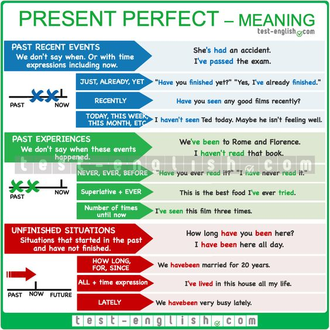

Quando usar o Present Perfect?
Indicar um vínculo entre o presente e o passado.
O período em que a ação ocorre é anterior ao presente momento, mas não é especificado.
Ações Concluídas
1. He has lost his wallet.
Ações concluídas recentemente
2. I have just finished my project.
Ações inacabadas
3. She has lived in Paris for 5 years.
Múltiplas Ações em Tempos Diferentes
4. I have seen David several times.
Experiências de vida
5. Have you ever eaten sushi before?
Realizações
6. Man has walked on the moon.
Mudanças ao longo do tempo
7. I have become more interested in medicine.
EVER
Já , alguma vez na sua vida
8. Have you ever been to England?
9. Nobody has ever said that to me.
NEVER
Nunca
10. We have never seen it before.
11. The series has never been shown on television.
JUST
Acabou de acontecer
12. I have just done it.
13. You have just arrived.
ALREADY
ação já ocorreu
14. She already knows everything.
15. He has already arrived at home.
YET
AINDA em frases negativas;
JÁ em frases interrogativas
16. I haven't seen the Central Park Gallary yet.
17. Have you met Bob yet?
FOR
por, há | Usado em Duração - for + período de tempo
for five years, for a week, for a month, for hours, for three hours
18. I have lived here for 10 years.
19. She has taught at this univerity for a long time.
SINCE
desde | Usado em Ponto de Partida - Since + momento concreto
since this morning, since last week, since yesterday
since He was a child, since Friday, since 3 o'clock
20. I have lived here since 1990.
21. She has taught at this univerity since 1983.